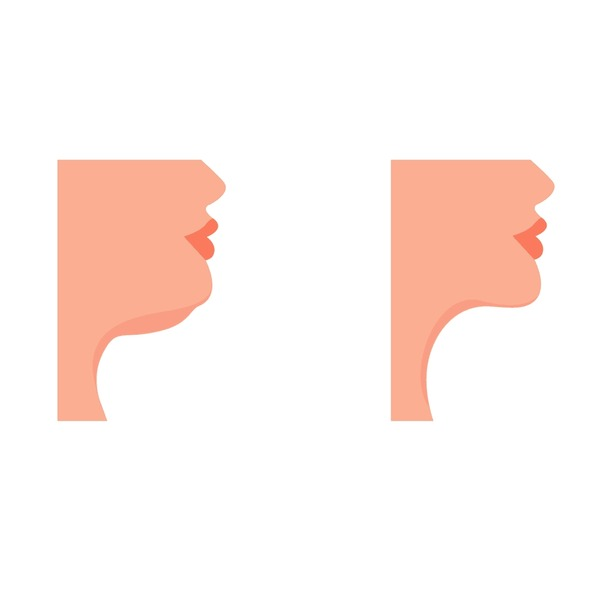
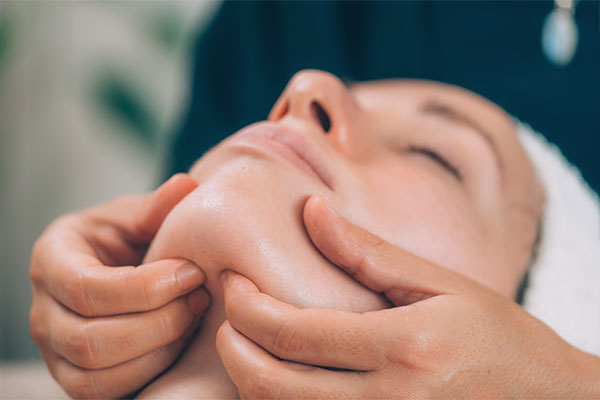

JAWLINE: THE SECRET TO A MORE DEFINED FACIAL FEATURE
Date: sep 17, 2024
Over the years of human evolution our jawbone has evolved to be smaller than that of our predecessor's.
Studies have shown that a well-defined jawline can make a face more attractive, as it can indicate good health, strength, and fertility. The shape and definition of the jawline can also affect how youthful and attractive someone appears.
The human jaw has evolved significantly over time, adapting to changes in diet, lifestyle, and overall physical development. Throughout these evolutionary stages, the human jaw has adapted ultimately leading to the highly specialized and versatile jaw of modern humans. Although not scientifically proven, yet, certain jaw exercises can help reshape your jaw to attain a chiseled jawline.
To enable you gain a clearer picture of this topic, I've provided the following info below...
Ben Affleck
Ben Affleck is an American actor, director, and producer who has been widely recognized for his distinctive jawline. The jawline is a prominent facial feature that can greatly influence a person's overall appearance and perceived attractiveness.
Ben Affleck's jawline is characterized by a strong, angular, and defined shape. It of his most noticeable and iconic features, which has been praised and emulated by many fans and admirers. The shape of his jawline is often described as chiseled, angular, and masculine, which has contributed to his enduring popularity and appeal.
The strength and definition of Affleck's jawline are believed to have played a significant role in his success as an actor. His facial features, including his jawline, have been praised for their ability to convey emotion and add depth to his performances. Additionally, his jawline has been cited as one of the key factors that contribute to his perceived attractiveness and charm.
Some of you might still ask, is it worth the effort?
Well, I don't know about you, but seeing this makes me wanna try...
And it comes with it's own advantages!
Why you should have a good jawline____
A chiseled jawline can greatly enhance one's appearance and provide several benefits, including:
1. Improved Facial Symmetry:
A chiseled jawline can help in balancing the features of the face, making the overall appearance more symmetrical and aesthetically pleasing.
2. Defined Facial Features:
A chiseled jawline can help in defining the cheekbones, jawline, and chin, making the facial features more prominent and noticeable.
3. Youthful Appearance:
A chiseled jawline can help in giving the face a more youthful and defined appearance, reducing the appearance of sagging or loose skin.
4. Increased Confidence:
A chiseled jawline can greatly enhance one's self-confidence, as it can make the person feel more attractive and self-assured.
5. Enhanced Facial Expressions:
A chiseled jawline can help in enhancing facial expressions, making it easier to convey emotions and add depth to the face.
6. Improved Posture:
A chiseled jawline can help in improving posture by engaging the muscles in the neck and jaw area, which can lead to a more confident and assertive appearance.
7. Reduced Double Chin:
A chiseled jawline can help in reducing the appearance of a double chin by toning the muscles in the neck area and defining the jawline.
With all these said, let's get to the main reason why you're reading this article,
How to get a chiseled jawline?
The jawline is one of the most defining features of the human face, and a chiseled jawline can greatly enhance one's appearance. A chiseled jawline is characterized by defined cheekbones, a well-defined jawline, and a prominent chin. In this blog, we will explore the various factors that contribute to a chiseled jawline and provide tips on how to achieve one.
Genetics play a significant role in determining the shape and structure of one's jawline. However, there are several factors that can influence the appearance of the jawline, including:
1. Facial Muscles:
The jaw muscles, specifically the masseter and the medial pterygoid, play a crucial role in defining the jawline. These muscles are responsible for closing the jaw and help in shaping the jawline.
2. Bone Structure:
The bone structure of the face, particularly the cheekbones and the jawbone, can greatly influence the appearance of the jawline. People with a more angular bone structure are more likely to have a chiseled jawline.
3. Fat Distribution:
The distribution of fat in the face can also impact the appearance of the jawline. Excess fat in the cheek and neck area can make the jawline appear less defined.
4. Skin Texture:
The texture of the skin can also influence the appearance of the jawline. Smooth skin can accentuate the definition of the jawline, while rough or uneven skin can make it less defined.
There are several exercises that can help in toning and strengthening the jaw muscles, which in turn can help in defining the jawline. Some of these exercises include:
1. Clenching the Jaw: Clenching the jaw muscles by biting down on a rubber ball or a similar object can help in toning the muscles and defining the jawline.
2. Side-to-Side Jaw Movement: Moving the jaw from side to side, as if you were saying "no" repeatedly, can help in toning the masseter muscles and defining the jawline.
3. Up and Down Jaw Movement: Moving the jaw up and down, as if you were saying "yes" repeatedly, can help in toning the medial pterygoid muscles and defining the jawline.
4. Cheek Lifts: Lifting the cheeks by pressing your fingers against them and then releasing can help in toning the cheek muscles and defining the jawline.
5. Chin Lifts: Lifting the chin by pressing your fingers against the chin and then releasing can help in toning the chin muscles and defining the jawline.
In addition to exercises, there are several other ways to achieve a chiseled jawline, including:
1. Facial Massage: Massaging the face, particularly the cheek and jaw area, can help in increasing blood flow and toning the muscles, which can lead to a more defined jawline.
2. Facial Yoga: Practicing facial yoga, which involves specific exercises and stretches, can help in toning the facial muscles and defining the jawline.
3. Diet and Exercise: Maintaining a healthy diet and exercising regularly can help in toning the muscles and reducing excess fat, which can lead to a more defined jawline.
4. Facial Treatments: Certain facial treatments, such as facial massage, micro-needling, and chemical peels, can help in toning the muscles and improving the texture of the skin, which can lead to a more defined jawline.
In conclusion, achieving a chiseled jawline involves a combination of genetics, facial muscles, bone structure, fat distribution, and skin texture. While there are no guaranteed ways to achieve a chiseled jawline, there are several exercises, treatments, and lifestyle changes that can help in toning the muscles and defining the jawline. Remember to always consult with a healthcare professional before starting any new exercise or treatment regimen.